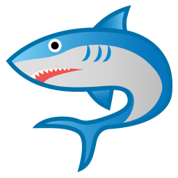

<!DOCTYPE html>
<html>
  <head>
    <title>Scientific space mission</title>
    <!-- jspsych plugins -->
    <script src="jspsych-6.3.1/jspsych.js"></script>
    <script src="jspsych-6.3.1/plugins/jspsych-fullscreen.js"></script>
    <script src="jspsych-6.3.1/plugins/jspsych-preload.js"></script>
    <script src="jspsych-6.3.1/plugins/jspsych-html-keyboard-response.js"></script>
    <script src="jspsych-6.3.1/plugins/jspsych-html-button-response.js"></script>
    <script src="jspsych-6.3.1/plugins/jspsych-audio-keyboard-response.js"></script>
    <script src="jspsych-6.3.1/plugins/jspsych-categorize-image.js"></script> <!-- For practice with feedback -->
    <script src="jspsych-6.3.1/plugins/jspsych-free-sort.js"></script> <!-- For graph reconstruction -->
    <script src="jspsych-6.3.1/plugins/jspsych-mars-trial.js"></script>
    <script src="jspsych-6.3.1/plugins/jspsych-call-function.js"></script>


    <!-- load custom css -->
    <link rel="stylesheet" href="css/commdev.css"></link>

    <!-- load custom javascript here!! -->
    <script src="js/generate-learning-sequence.js"></script>
    <!-- <script src="js/generate-hamrand-sequence.js"></script> -->
    <script src="js/generate-parsing-sequence.js"></script>
    <script src="js/commdev-image-keyboard-response.js"></script>
    <script src="js/commdev-sound-image-keyboard-response.js"></script> <!-- jingle when there's a correct response -->
    
    <script src="js/jspsych-comprehension-question.js"></script> 
    <script src="js/jspsych-commdev-instructions.js"></script> 
    <script src="js/jspsych-commdev-audio-test.js"></script> 

    <script src="js/experiment-settings.js"></script> 
    <script src="js/load-stimuli.js"></script> 
    <script src="js/instructions-text.js"></script> 
    <script src="js/practice-settings.js"></script> 

    <!-- Load pavlovia requirements -->
    <script src="lib/jspsych-pavlovia-3.0.0.js"></script>
    <script src="lib/vendors/jquery-2.2.0.min.js"></script>
  
  </head>
  <body></body>
  <script>

    // var images_to_preload from stimuli.js

    /* create timeline */
    var timeline = [];
    
    /** GET SUB ID BASED ON URL **/
    var urlvar = jsPsych.data.urlVariables();
    
    var pavlovia_init = {
      type: "pavlovia",
      command: "init",
      participantId: urlvar.subject_ID
    };
    var pavlovia_finish = {
      type: "pavlovia",
      command: "finish",
      participantId: urlvar.subject_ID
    };
    var save_metadata = {
        type: 'call-function',
        func: () => {},
        data: {
            metadata: {
                task_version: 'sailing_part2_v1',
                task_condition: urlvar.condition,
                planet_mappings:  PLANET_MAPPINGS,
                subject_id: urlvar.subject_ID,
                age: urlvar.age,
                gender: urlvar.gender
            },
        },
    };

    var preload_stimuli = {
      type: 'preload',
      audio: audio_to_preload,
      images: images_to_preload,
      message: "<p> Loading the game. </p> This may take a few minutes. </p> Thank you for your patience! </p>"
    }

    /* define full screen enter */
    var fullscreen_enter = {
      type: 'fullscreen',
      fullscreen_mode: true
    };

    
    var part_2_text = {
      type: 'html-keyboard-response',
      stimulus: "<p>Great job! Now, lets move on to a second game.</p>",
      trial_duration: 3000
    };
    var end_game = {
      type: 'html-keyboard-response',
      stimulus: "<p>You're all done! Thank you for all your hard work.</p>"+
        '',
      trial_duration: 3000
    };

    /* audio test */
    var start_audio = {
        type: 'audio-keyboard-response',
        stimulus: 'audio/twinkle.mp3',
        choices: jsPsych.ALL_KEYS,
        prompt: 'Make sure your volume is on! Press the space bar to proceed.' // ' to the audio test.',
    };
    var audio_test_1 = {
        type: 'audio-test',
        stimulus: 'audio/shark.mp3',
        choices: ['repeat','turtle', 'shark', 'fish', 'tiger'],
        correct_answer: 2,
        prompt: 'Click on the animal that you just heard. If you need to, adjust your volume and try again.',
        incorrect_prompt: 'Incorrect, please adjust your volume and try again.',
        margin_vertical: '40px',
        margin_horizontal: '10px',
        button_html:[
            '',
            '',
            '',
            '',
            ''
        ],
        post_trial_gap: 1000
    };
    var audio_test_2 = {
        type: 'audio-test',
        stimulus: 'audio/turtle.mp3',
        choices: ['repeat','fish', 'tiger', 'turtle', 'shark'],
        correct_answer: 3,
        prompt: 'Click on the word that you just heard.',
        incorrect_prompt: 'Incorrect, please adjust your volume and try again.',
        margin_vertical: '40px',
        margin_horizontal: '10px',
        button_html:[
            '',
            '',
            '',
            '',
            ''
        ],
        post_trial_gap: 1000
    };

    var get_ready_press_F = {
      type: "html-keyboard-response",
      stimulus: "<p>Remember, press <strong>F</strong> or <strong>J</strong> depending on the wind direction.</p>" + 
        '<p>Make sure your fingers are on the F and J keys.</p>" +
        "<p>Press <strong>F</strong> when you're ready!</p>",
      choices: ['f']
    };
    var get_ready_press_J = {
      type: "html-keyboard-response",
      stimulus: "<p>Remember, press <strong>F</strong> or <strong>J</strong> depending on the wind direction.</p>" + 
        '<br><p>Make sure your fingers are on the F and J keys.</p>" +
        "<p>Press <strong>J</strong> when you're ready!</p>",
      choices: ['j']
    };
    var get_ready_press_space = {
      type: "html-keyboard-response",
      stimulus: "<p>Remember, press the <b>SPACEBAR</b> when you think you've travelled to a new galaxy.</p>" + 
        ''+
        "<p>Press the <strong>SPACEBAR</strong> when you're ready!</p>",
      choices: [' ']
    };

    /* INSTRUCTIONS  ----------------------------------- */

    /* define instructions trial */
    var instructions_trial = {
      type: "commdev-instructions",
      stimulus: jsPsych.timelineVariable('stimulus'),
      audio_stim: jsPsych.timelineVariable('audio'),
      choices: jsPsych.timelineVariable('choices'),
      data: { task_part: 'instructions' },
      post_trial_gap: 100
    };
    var pre_practice_instructions = {
      timeline: [instructions_trial],
      timeline_variables: instructions_text1,
      randomize_order: false
    }
    var instructions_block2 = {
      timeline: [instructions_trial],
      timeline_variables: instructions_text2,
      randomize_order: false
    }
    var instructions_block2a = {
      timeline: [instructions_trial],
      timeline_variables: instructions_text2a,
      randomize_order: false
    }   
    var instructions_block3 = {
      timeline: [instructions_trial],
      timeline_variables: instructions_text3,
      randomize_order: false
    }      
    var parse_instructions_block = {
      timeline: [instructions_trial],
      timeline_variables: parse_instructions_text,
      randomize_order: false
    }    
    var parse_ready_block = {
      timeline: [instructions_trial],
      timeline_variables: parse_ready_text,
      randomize_order: false
    }     
    var reconstruction_instructions_block = {
      timeline: [instructions_trial],
      timeline_variables: reconstruction_instructions_text,
      randomize_order: false
    }      
    
  /* COMPREHENSION QUESTIONS  ----------------------------------- */

  /* define comprehension question */
  var comp_question = {
    type: "comprehension-question",
    audio_stim: jsPsych.timelineVariable('audio_stim'),
    stimulus: jsPsych.timelineVariable('stimulus'),
    choices: ['TRUE', 'FALSE'],
    data: { task_part: 'comp_question' },
    post_trial_gap: 100,
    on_finish: function (data) {
      if (data.button_pressed == jsPsych.timelineVariable('correct_button', true)) {
        data.correct = true;
      } else {
        data.correct = false;
      }
    }
  }
  /* define comprehension answer */
  var comp_answer = {
    type: "comprehension-question",
    stimulus: function () {
      var last_trial_correct = jsPsych.data.get().last(1).values()[0].correct;
      if (last_trial_correct) {
        return jsPsych.timelineVariable('right_response', true)
      } else {
        return jsPsych.timelineVariable('wrong_response', true)
      }
      },
      audio_stim: function () {
        var last_trial_correct = jsPsych.data.get().last(1).values()[0].correct;
        if (last_trial_correct) {
          return jsPsych.timelineVariable('right_audio', true)
        } else {
          return jsPsych.timelineVariable('wrong_audio', true)
        }
      },
      choices: ['Next'],
      data: { task_part: 'comp_answer' },
      post_trial_gap: 100
    };

    /* comprehension question procedures */
    var comp_question_1 = {
      timeline: [comp_question, comp_answer],
      timeline_variables: comp_question_text1,
      loop_function: function (data) {
        var last_trial_correct = jsPsych.data.get().last(2).values()[0].correct;
        if (last_trial_correct) { return false; }
        else { return true; }
      },
    }
    var comp_question_2 = {
      timeline: [comp_question, comp_answer],
      timeline_variables: comp_question_text2,
      loop_function: function (data) {
        var last_trial_correct = jsPsych.data.get().last(2).values()[0].correct;
        if (last_trial_correct) { return false; }
        else { return true; }
      },
    }
    var comp_question_3 = {
      timeline: [comp_question, comp_answer],
      timeline_variables: comp_question_text3,
      loop_function: function (data) {
        var last_trial_correct = jsPsych.data.get().last(2).values()[0].correct;
        if (last_trial_correct) { return false; }
        else { return true; }
      },
    }
    var comp_question_4 = {
      timeline: [comp_question, comp_answer],
      timeline_variables: comp_question_text4,
      loop_function: function (data) {
        var last_trial_correct = jsPsych.data.get().last(2).values()[0].correct;
        if (last_trial_correct) { return false; }
        else { return true; }
      },
    }

    var parse_comp_question_1 = {
      timeline: [comp_question, comp_answer],
      timeline_variables: parse_comp_text_1,
      loop_function: function (data) {
        var last_trial_correct = jsPsych.data.get().last(2).values()[0].correct;
        if (last_trial_correct) { return false; }
        else { return true; }
      },
    }
    var parse_comp_question_2 = {
      timeline: [comp_question, comp_answer],
      timeline_variables: parse_comp_text_2,
      loop_function: function (data) {
        var last_trial_correct = jsPsych.data.get().last(2).values()[0].correct;
        if (last_trial_correct) { return false; }
        else { return true; }
      },
    }

    /* test trials */
    var learn_trial = {
      type: "commdev-image-keyboard-response",
      stimulus: jsPsych.timelineVariable('stimulus'),
      choices: ['f', 'j'],
      trial_duration: MAX_RT,
      response_ends_trial: false,
      render_on_canvas: true, // prevents white flashes in ITI?
      data: jsPsych.timelineVariable('data'),
      post_trial_gap: 0,
      on_finish: function(data){
        data.correct = jsPsych.pluginAPI.compareKeys(data.key_press, data.correct_response)
      },
    }

    var parse_trial = {
      type: "commdev-sound-image-keyboard-response",
      stimulus: jsPsych.timelineVariable('stimulus'),
      choices: [' '],
      trial_duration: MAX_RT,
      response_ends_trial: false,
      correct_key: ' ',
      correct_sound: 'audio/fast_twinkle.mp3',
      // css_classes: jsPsych.timelineVariable('css_class'),
      data: jsPsych.timelineVariable('data'),
      on_finish: function(data){
        if(data.response == " "){
          data.parse = true;
        } else {
          data.parse = false;
        }
      }
    }

    var debrief_screen_1 = {
      type: "html-keyboard-response",
      choices: ['9'],
      data: {block: '1'},
      stimulus: function() {

        var trials = jsPsych.data.get().filter({block: "learnblock1"});
        var correct_trials = trials.filter({correct: true});
        var accuracy = Math.round(correct_trials.count() / trials.count() * 100);
        jsPsych.data.write({pcorrect: accuracy})
        var rt = Math.round(correct_trials.select('rt').mean());

        return `
        <p>Thanks for your hard work! The team back on Earth has analyzed your data.</p>   
        <p><strong><p style="font-size: 25px;color:green;">You got ${accuracy}% correct!</p></color></strong>
        <p>See if you can beat that on the next mission.</p> 
        
        <br><p><b>Take a break for however long you want.</b></p>
        <p><i>Press 9 to continue.</i></p>`;

      },
      on_finish: function(timestamp){
        var timestamp = (new Date).toISOString().replace(/z|t/gi,' ').trim();
        jsPsych.data.addDataToLastTrial({timestamp});},
    };

    var debrief_screen_2 = {
      type: "html-keyboard-response",
      choices: ['3'],
      data: {block: '2'},
      stimulus: function() {

        var trials = jsPsych.data.get().filter({block: "learnblock2"});
        var correct_trials = trials.filter({correct: true});
        var accuracy = Math.round(correct_trials.count() / trials.count() * 100);
        var rt = Math.round(correct_trials.select('rt').mean());

        return `
        <p>Thanks for your hard work! The team back on Earth has analyzed your data.</p>   
        <p><strong><p style="font-size: 25px;color:green;">You got ${accuracy}% correct!</p></color></strong>
        <p>See if you can beat that on the next mission.</p> 
        
        <br><p><b>Take a break for however long you want.</b></p>
        <p><i>Press 3 to continue.</i></p>`;

      },
      on_finish: function(timestamp){
        var timestamp = (new Date).toISOString().replace(/z|t/gi,' ').trim();
        jsPsych.data.addDataToLastTrial({timestamp});},
    };

    var debrief_screen_3 = {
      type: "html-keyboard-response",
      choices: ['5'],
      data: {block: '3'},
      stimulus: function() {

        var trials = jsPsych.data.get().filter({block: "learnblock3"});
        var correct_trials = trials.filter({correct: true});
        var accuracy = Math.round(correct_trials.count() / trials.count() * 100);
        var rt = Math.round(correct_trials.select('rt').mean());

        return `
        <p>Thanks for your hard work! The team back on Earth has analyzed your data.</p>   
        <p><strong><p style="font-size: 25px;color:green;">You got ${accuracy}% correct!</p></color></strong>
        <p>See if you can beat that on the next mission.</p> 
        
        <br><p><b>Take a break for however long you want.</b></p>
        <p><i>Press 5 to continue.</i></p>`;
      },
      on_finish: function(timestamp){
        var timestamp = (new Date).toISOString().replace(/z|t/gi,' ').trim();
        jsPsych.data.addDataToLastTrial({timestamp});},

    };

    var debrief_screen_4 = {
      type: "html-keyboard-response",
      choices: ['2'],
      data: {block: '3'},
      stimulus: function() {

        var trials = jsPsych.data.get().filter({block: "learnblock4"});
        var correct_trials = trials.filter({correct: true});
        var accuracy = Math.round(correct_trials.count() / trials.count() * 100);
        var rt = Math.round(correct_trials.select('rt').mean());

        return `
        <p>Thanks for your hard work! The team back on Earth has analyzed your data.</p>   
        <p><strong><p style="font-size: 25px;color:green;">You got ${accuracy}% correct!</p></color></strong>
        <p>See if you can beat that on the next mission.</p> 
        
        <br><p><b>Take a break for however long you want.</b></p>
        <p><i>Press 2 to continue.</i></p>`;
      },
      on_finish: function(timestamp){
        var timestamp = (new Date).toISOString().replace(/z|t/gi,' ').trim();
        jsPsych.data.addDataToLastTrial({timestamp});},

    };

    var practice_learn_block = {
      timeline: [learn_trial],
      timeline_variables: generate_practice_sequence(8), 
      repetitions: 1, 
      data: {block: 'practice'},
      randomize_order: false
    }

    /* define learning blocks */
    var learn_block_1 = {
      timeline: [learn_trial],
      timeline_variables: generate_learning_sequence(NUM_LEARN_TRIALS_PER_BLOCK, 'learnblock1'), 
      repetitions: 1, 
      data: {block: '1'},
      randomize_order: false
    }
    var learn_block_2 = {
      timeline: [learn_trial],
      timeline_variables: generate_learning_sequence(NUM_LEARN_TRIALS_PER_BLOCK, 'learnblock2'), 
      repetitions: 1, 
      data: {block: '2'},
      randomize_order: false
    }
    var learn_block_3 = {
      timeline: [learn_trial],
      timeline_variables: generate_learning_sequence(NUM_LEARN_TRIALS_PER_BLOCK, 'learnblock3'), 
      repetitions: 1, 
      data: {block: '3'},
      randomize_order: false
    }
    var learn_block_4 = {
      timeline: [learn_trial],
      timeline_variables: generate_learning_sequence(NUM_LEARN_TRIALS_PER_BLOCK, 'learnblock4'), 
      repetitions: 1, 
      data: {block: '4'},
      randomize_order: false
    }

    /* define parsing blocks */
    var parse_block_1 = {
      timeline: [parse_trial],
      timeline_variables: generate_parsing_sequence(NUM_PARSE_TRIALS_PER_BLOCK, 'parseblock1'), 
      repetitions: 1, 
      randomize_order: false
    }
    /* define parsing blocks */
    var parse_block_2 = {
      timeline: [parse_trial],
      timeline_variables: generate_parsing_sequence(NUM_PARSE_TRIALS_PER_BLOCK, 'parseblock2'), 
      repetitions: 1, 
      randomize_order: false
    }
    /* define parsing blocks */
    var parse_block_3 = {
      timeline: [parse_trial],
      timeline_variables: generate_parsing_sequence(NUM_PARSE_TRIALS_PER_BLOCK, 'parseblock3'), 
      repetitions: 1, 
      randomize_order: false
    }
    /* define parsing blocks */
    var parse_block_4 = {
      timeline: [parse_trial],
      timeline_variables: generate_parsing_sequence(NUM_PARSE_TRIALS_PER_BLOCK, 'parseblock4'), 
      repetitions: 1, 
      randomize_order: false
    }

    /* start game */
    var pre_break_screen = {
        type: 'html-button-response',
        stimulus: "<p>Good job! Press Next to find out how you did!</p>",
        choices: ['Next'],
        data: {block: 'pre_break_screen'},
    };
    
    /* start game */
    var parse_break_1 = {
      type: 'html-keyboard-response',
      stimulus: '' + "<p>Good job! You will now start a new mission.</p>"+
      "<p>Remember, press <strong>SPACE</strong> when you think you've travelled to a new galaxy.</p>" + 
      "<p>Take a break for however long you want. "+
        "When you're ready, press 6 to continue.</p>",
      choices: ['6'],
      data: {block: '1'},
    };

    /* start game */
    var parse_break_2 = {
      type: 'html-keyboard-response',
      stimulus: '' + "<p>Good job! You will now start a new mission.</p>"+
      "<p>Remember, press <strong>SPACE</strong> when you think you've travelled to a new galaxy.</p>" + 
      "<p>Take a break for however long you want. "+
        "When you're ready, press 8 to continue.</p>",
      choices: ['8'],
      data: {block: '2'},
    };

    /* start game */
    var parse_break_3 = {
      type: 'html-keyboard-response',
      stimulus: '' + "<p>Good job! You will now start a new mission.</p>"+
      "<p>Remember, press <strong>SPACE</strong> when you think you've travelled to a new galaxy.</p>" + 
      "<p>Take a break for however long you want. "+
        "When you're ready, press 3 to continue.</p>",
      choices: ['3'],
      data: {block: '2'},
    };

    var graph_reconstruction_block = {
      type: 'free-sort',
      stimuli: sorting_stimuli, //from stimuli.js
      stim_starts_inside: true,
      stim_width: screen.width/16,
      stim_height: screen.width/16,
      sort_area_width: screen.width/1.3,
      sort_area_height: screen.height/1.4,
      scale_factor: 1,
      sort_area_shape: 'square',
      change_border_background_color: false,
      prompt: "<i>Click and drag the planets based on how close you think they are in the universe.</i>",
      counter_text_finished: ""
    };

    var graph_learning_full = {
      timeline: [
        pre_practice_instructions,
        get_ready_press_F,
        practice_both_block,
        instructions_block2,
        practice_learn_block,
        instructions_block2a,
        comp_question_1,
        comp_question_2,
        comp_question_3,
        comp_question_4,
        instructions_block3,
        get_ready_press_J,
        learn_block_1,
        pre_break_screen,
        debrief_screen_1,
        get_ready_press_F,
        learn_block_2,
        pre_break_screen,
        debrief_screen_2,
        parse_instructions_block,
        parse_comp_question_1,
        parse_comp_question_2,
        parse_ready_block,
        get_ready_press_space,
        parse_block_1,
        parse_break_1,
        get_ready_press_space,
        parse_block_2,
        parse_break_2,
        get_ready_press_space,
        parse_block_3,
        parse_break_3,
        get_ready_press_space,
        parse_block_4,
        reconstruction_instructions_block,
        graph_reconstruction_block,
      ],
    }

    // MaRs Task code
    var mars_instructions_1 = {
      timeline: [instructions_trial],
      timeline_variables: [{
        stimulus: "<p>In this game, you will be shown a 3x3 grid of patterns.</p> " +
          "<p>The last one in the bottom right-hand corner, <strong>will be " +
          "missing:</strong></p> " +
          "<div style='width: 700px;'>" +
          "<div style='float: top;'></img>" +
          "<p class='small'>You need to select<strong> which of the four possible patterns " +
          "</strong>along the bottom<strong> fits into the gap:</strong></p></div>" +
          "<div style='float: top;'></img>" +
          "</div><br>",
        audio: "audio/mars_instructions_slide2.wav"
      }],
    }  
    var mars_instructions_2 = {
      timeline: [instructions_trial],
      timeline_variables: [{
        stimulus: "<p>Try to be as fast and as accurate as you can be.</p> " +
        "<p>If you cannot solve the puzzle then you should guess - you will " +
        "not be penalised for an incorrect answer.</p> " +
        "<p>The task contains a shuffled mix of easy, medium and hard puzzles.</p> " +
        "<p>You will have <strong>30 seconds</strong> to complete each puzzle.</p><br> ",
        audio: "audio/mars_instructions_slide3.wav"
      }],
    }        

    // PRACTICE TRIALS
    var practice_trial_stimuli_1 = [
      { stimulus: "</img>", choices: ["</img>", "</img>", "</img>", "</img>"], data: { part: 'practice', correct_response: "</img>", correct_button: 0 } },
    ];
    var practice_trial_stimuli_2 = [
      { stimulus: "</img>", choices: ["</img>", "</img>", "</img>", "</img>"], data: { part: 'practice', correct_response: "</img>", correct_button: 0 } },
    ];
    var practice_trial_stimuli_3 = [
      { stimulus: "</img>", choices: ["</img>", "</img>", "</img>", "</img>"], data: { part: 'practice', correct_response: "</img>", correct_button: 0 } }
    ];

    // include fixation cross (+)
    var fixation_practice = {
      type: 'html-keyboard-response', // plugin we use
      stimulus: '<div style="font-size:60px;">+</div>', // define the size of the fixation cross
      choices: jsPsych.NO_KEYS, // no responses will be accepted
      trial_duration: 500, // how long do we want to present the fixation cross
      post_trial_gap: 100, // there will be a 100ms blank screen after the fixation cross
      data: { part: 'fixation' },
      on_finish: function (timestamp) {
        var timestamp = (new Date).toISOString().replace(/z|t/gi, ' ').trim();
        jsPsych.data.addDataToLastTrial({ timestamp });
      }
    }

    // set up practice trial to show the practice problem
    var practice_trial = {
      type: "mars-trial",
      stimulus: jsPsych.timelineVariable('stimulus'),
      choices: jsPsych.timelineVariable('choices'),
      data: jsPsych.timelineVariable('data'),
      trial_duration: 30000, // subjects have 30 seconds to respond
      countdown_start: 25000, // when to start countdown clock
      feedback_duration: 2000, // show feedback in practice trials for 2 seconds
      shuffle_buttons: true,
      display_feedback: true,
      pos_img: "<div id='feedback'> </img> </div>",
      neg_img: "<div id='feedback'> </img> </div>",
      on_finish: function (data) {
        if (data.unshuffled_button == data.correct_button) {
          data.correct = true;
        }
        else { data.correct = false }
      },
      function(timestamp) {
        var timestamp = (new Date).toISOString().replace(/z|t/gi, ' ').trim();
        jsPsych.data.addDataToLastTrial({ timestamp });
      }
    }

    var practice_procedure_1 = {
      timeline: [fixation_practice, practice_trial],
      timeline_variables: practice_trial_stimuli_1,
      loop_function: function (data) {
        var last_trial_correct = jsPsych.data.get().last(1).values()[0].correct;
        if (last_trial_correct) { return false; }
        else { return true; }
      }
    }
    var practice_procedure_2 = {
      timeline: [fixation_practice, practice_trial],
      timeline_variables: practice_trial_stimuli_2,
      loop_function: function (data) {
        var last_trial_correct = jsPsych.data.get().last(1).values()[0].correct;
        if (last_trial_correct) { return false; }
        else { return true; }
      }
    }
    var practice_procedure_3 = {
      timeline: [fixation_practice, practice_trial],
      timeline_variables: practice_trial_stimuli_3,
      loop_function: function (data) {
        var last_trial_correct = jsPsych.data.get().last(1).values()[0].correct;
        if (last_trial_correct) { return false; }
        else { return true; }
      }
    }

    var mars_instructions_3 = {
      timeline: [instructions_trial],
      timeline_variables: [{
        stimulus:"<p><strong>Success!</strong></p> " +
        "<p>You seem to be getting the hang of this...</p> " +
        "<p>Let's move on to the real trials.</p><br> ",
        audio: "audio/mars_instructions_slide4.wav"
      }],
    }       

    // include fixation cross (+)
    var fixation = {
      type: 'html-keyboard-response', // plugin we use
      stimulus: '<div style="font-size:60px;">+</div>', // define the size of the fixation cross
      choices: jsPsych.NO_KEYS, // no responses will be accepted
      trial_duration: 500, // how long do we want to present the fixation cross
      post_trial_gap: 100, // there will be a 100ms blank screen after the fixation cross
      data: { part: 'fixation' },
      on_finish: function (timestamp) {
        var timestamp = (new Date).toISOString().replace(/z|t/gi, ' ').trim();
        jsPsych.data.addDataToLastTrial({ timestamp });
      }
    }

    // set up new trial
    var trial = {
      type: "mars-trial",
      stimulus: jsPsych.timelineVariable('stimulus'),
      choices: jsPsych.timelineVariable('choices'),
      data: jsPsych.timelineVariable('data'),
      trial_duration: 30000, // subjects have 30 seconds to respond
      countdown_start: 25000, // when to start countdown clock
      feedback_duration: 500, // 500 ms feedback duration
      shuffle_buttons: true, // randomize choice options
      display_feedback: true,
      pos_img: "<div id='feedback'> </img> </div>",
      neg_img: "<div id='feedback'> </img> </div>",
      on_finish: function (data) { // identify correct response
        if (data.unshuffled_button == data.correct_button) {
          data.correct = true;
        }
        else { data.correct = false }
      },
      function(timestamp) {
        var timestamp = (new Date).toISOString().replace(/z|t/gi, ' ').trim();
        jsPsych.data.addDataToLastTrial({ timestamp });
      }
    }

    // create new timeline to link test_stimuli
    var procedure = {
      timeline: [fixation, trial],
      timeline_variables: stimuli,
      randomize_order: false, // we don't want to randomize the order for the main trials
    }

    var exp_timer = function () {
      setTimeout(function () {
        jsPsych.finishTrial();
        jsPsych.endCurrentTimeline();
      }, 480000); // 8-minute timer
    }

    var start_timer = {
      type: 'call-function',
      func: exp_timer
    }

    var mars_full = {
      timeline: [
        mars_instructions_1,
        mars_instructions_2,
        practice_procedure_1,
        practice_procedure_2,
        practice_procedure_3,
        mars_instructions_3,
        start_timer,
        procedure,
      ]
    }
  

    /* TIMELINE */
    timeline.push(pavlovia_init);
    timeline.push(save_metadata);
    timeline.push(preload_stimuli) 
    timeline.push(fullscreen_enter)
    timeline.push(start_audio)
    timeline.push(audio_test_1)
    timeline.push(audio_test_2)

    if (urlvar.condition == 0) {
      timeline.push(graph_learning_full);
      timeline.push(part_2_text)
      timeline.push(mars_full);
    } else {
      timeline.push(mars_full);
      timeline.push(part_2_text)
      timeline.push(graph_learning_full);
    }
   

    timeline.push(end_game);
    timeline.push(pavlovia_finish);

    var final_qualtrics_link = 'https://spark.hartleylab.org/completed/' + urlvar.subject_ID;

    /* start the experiment */
    jsPsych.init({
      timeline: timeline,
      on_interaction_data_update: function () {
            /* append updated browser interaction data to last trial whenever it changes */
            const interaction = jsPsych.data.getInteractionData()
            jsPsych.data.addDataToLastTrial({'browser_interaction': interaction.json()})
        },
      on_finish: function() {
        document.body.innerHTML = '<p> <center> Please wait while your data saves. You will be redirected in 10 seconds.  </center> </p>'
        setTimeout(function () { location.href = final_qualtrics_link }, 10000)
      },
    });


  </script>
</html>
